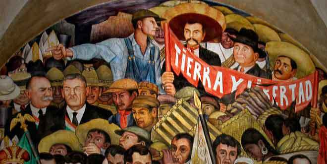

| Este peridio de la historia de México es muy importante ya que trata de un gran cambio
en no solo en la forma politica si no tambien en lo politico, social y cultural. Ya que a partir
de este suceso tan importante cambiaron muchas cosas. Se creo una constitucion y cambio nuestra
forma de seleccionar a los presidentes ya que ahora ya no hay re-elecciones para los presidentes
como lo es en algunas otras naciones como E.U.A, principalmente la forma en que se sucito la revolucion
fue para ayudar al puble de ese entonces, ya que las clases sociales en esa epóca estaban muy
remarcadas, los pobres eran cada vez mas pobres y los ricos se hacien mas ricos, ya que si hubo mucho
crecimiento economico en el pais pero eso solo beneficiaba a los ricos y no a la gente que trabajaba
para lograr ese crecimiento.
Por ello yo considero a la revolución como una enseñanza de como si podemos cambiar la forma en la que
dirigen los presidentes el pais, claro saltandonos la parte violenta. Por que no se puede cometer el mismo
error, solo tenemos que tratar de hacernos oir como personas y dar a conocer nuestras opiniones
y como es que queremos que nuestro pais mejore.
En conclusion la transformacion de México nunca empezo despues de quitar a Porfirio Díaz de la presidencia
solo ha estado retrasada por malas deciones y por tantos cambios que hubo de presidente duarante el periodo de lucha
de toma de presidencia de México. |  |